About Me
I am an MBO Level 4 ICT System Engineer and cybersecurity enthusiast from the Netherlands. My focus in cybersecurity drives me to continuously learn and adapt to the ever-evolving landscape of digital threats. I do this with the help of hands-on experience on TryHackMe and HackTheBox, and I put a lot of work into learning new aspects and getting certified in them. I'm a team player who enjoys working with others, contributing to a good atmosphere, and making sure tasks get done right.
Of course, my whole life isn't just IT. My other interests and hobbies include playing video games, going to the gym, and chilling with friends—though to be fair, doing CTFs and learning new things in cybersecurity is kind of a hobby too.
Education:
MBO Level 4 IT System Engineer at Ter AA
2025 - 2028
Focusing on system administration, network infrastructure, and core cybersecurity foundations.
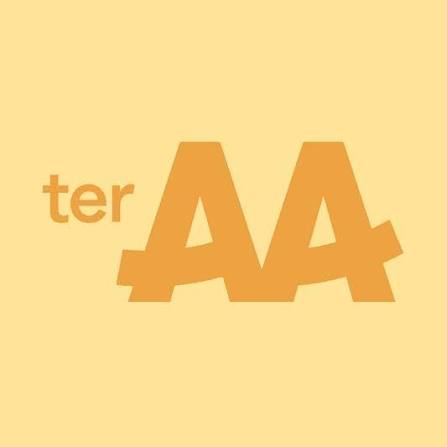
VMBO-T at Parmant Aloyius
2021 - 2025
Completed secondary education with a technical and theoretical profile.
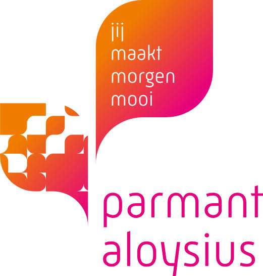
Projects:
the biggest projects i have made that are worth putting in my portfolio currently consist of 4 projects:
Office+ project:
the first project was office+ this was a school project we had to do in groups where we had to create a full office environment. which was fun and i learnt a lot in this project i had the role of cybersecurity and teamlead my other teamate had the role of network and the other on cloud/server managment. The picture under here shows the topology:
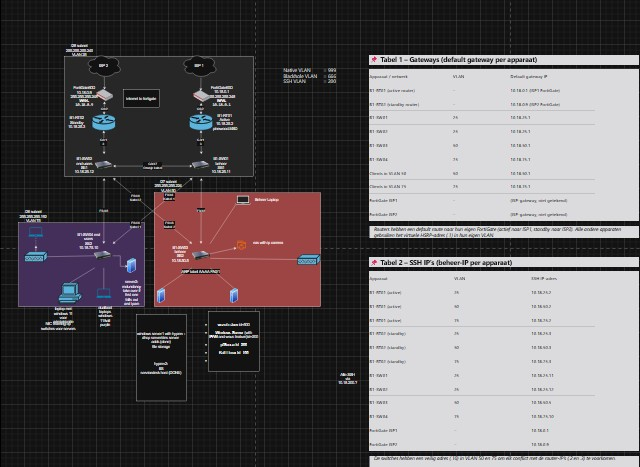
ctfworkbench:
the second project was ctfworkbench. This was a site I made with the help of AI. this website is particulary useful for students for are trying to learn and improve in cybersecurity and ctf's. this website had some usefull features like a command log and easy standard commands. View photo bellow:
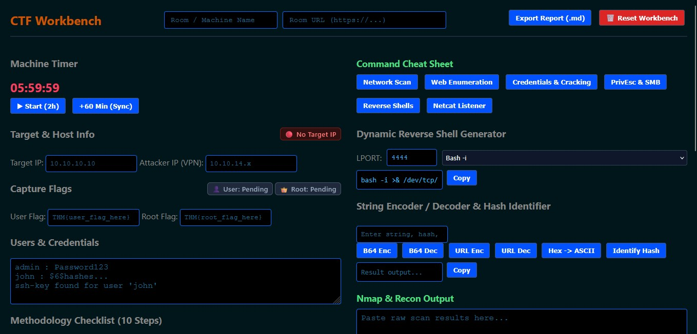
WHOAMI:
the third project was WHOAMI. this is the website you are currently on: this page is my personal resume, portofollio and a simple text about who i am.
HomeLab:
the fourth project is my HomeLab. which is a complete virtual homelab i am currently working on and i don't wanna share too much about it yet. But when its done, i will definitely share it here and also share what i learned from it.
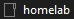
Work Experience:
Albert Heijn (supermarket)
may 2023 - present
Key Responsibilities:
- Responsible for maintaining product freshness, quality control, and visual presentation within the bakery department.
- Managing stock levels, processing incoming deliveries, and handling inventory management efficiently.
- Collaborating with team members to ensure smooth daily operations, maintaining high standards of customer service, and working proactively in a fast-paced retail environment.
Kuhn (Geldrop)
September 2026 - February 2027
Key Responsibilities:
- Providing technical support and assistance to colleagues as part of the internal IT service desk.
- Installing, configuring, and preparing new PCs and hardware workstations.
- Troubleshooting software and hardware issues to maintain smooth daily business operations.
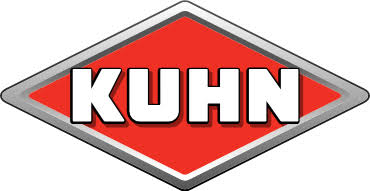
Skillset:
My skillset consists of the following skills and these are also verified by credly:
Systems and OS:
Linux, Microsoft Windows, Virtualization
Networking:
Network Security, Network Protocols, DNS, DHCP, IPv4, IPv6, Firewalls, Network Switches, Cisco Routers, Cisco IOS
Cybersecurity:
Cybersecurity, Threat Detection, SIEM, Information Security Management, Fortinet
Operations:
Network Troubleshooting, Troubleshooting, Documentation Skills
Certifications:
tryhackme:
pre security:
this certification i recieved when i completed the pre security course on tryhackme, where i learned the fundamentals of IT and technical concepts
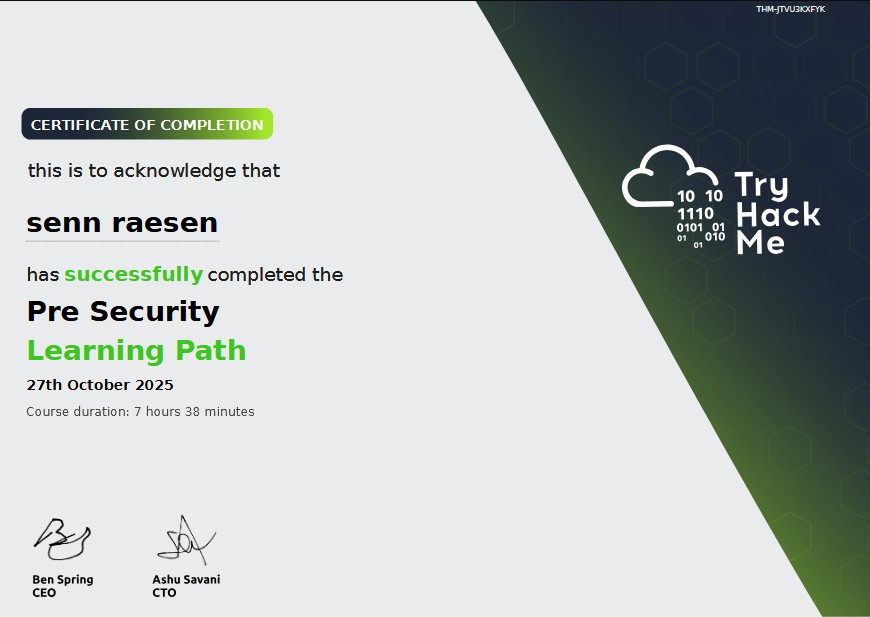
security 101:
this certification i recieved when i completed the security 101 course on tryhackme, where i learned about the basics of cybersecurity and how to defend and attack them
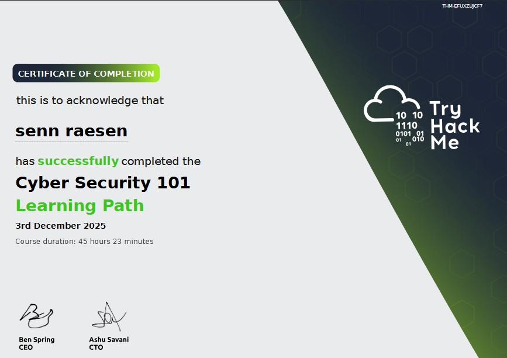
ai security:
this certification i recieved when i completed the AI security course on tryhackme, where i learned about the basics of AI and how to defend and attack them
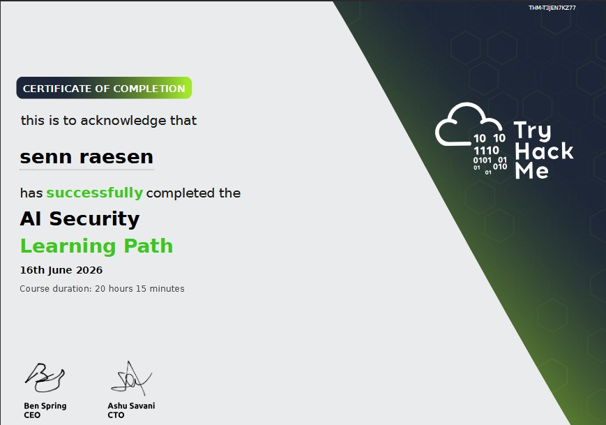
advent of cyber 2025:
this certification is a certification of completion for the Advent of Cyber 2025 course. where i got 25 days of easy rooms to do with a christmas theme which was very fun and i ofcourse learned new things from it
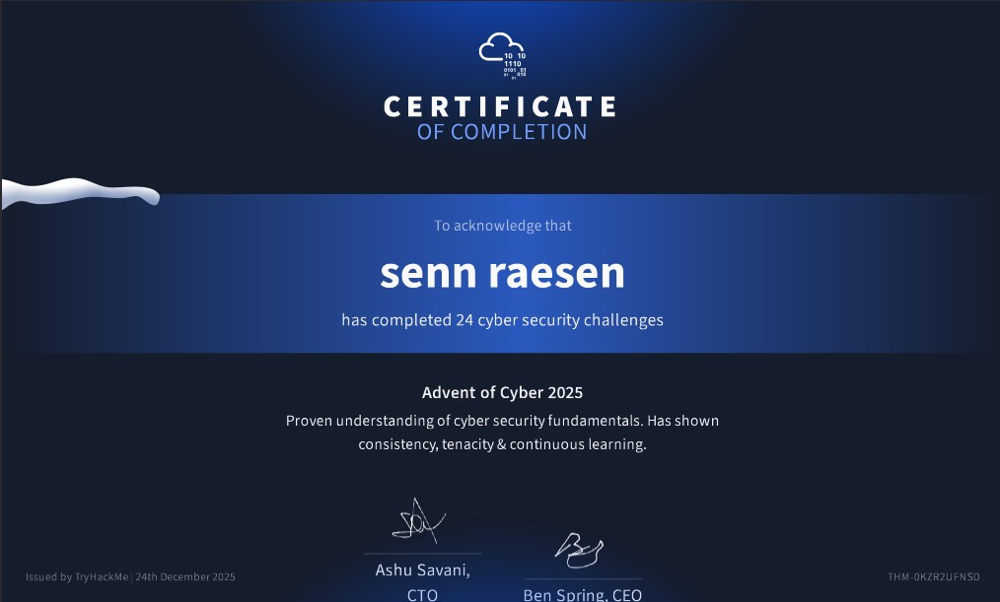
fortinet:
NSE 2:
i recieved this certification when i completed the NSE 2 course on fortinet, where i learned about the basics of network security and how to implement and manage security solutions
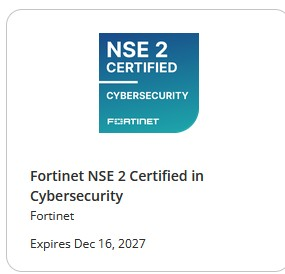
NSE 1:
i recieved this certification when i completed the NSE 1 course on fortinet, where i learned about the basics of network security and how to implement and manage security solutions
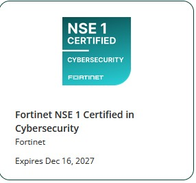
Fortinet Certified fundamentals cybersecurity:
i recieved this certification when i completed the Fortinet Certified fundamentals cybersecurity course on fortinet.
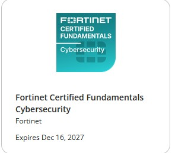
getting started in cybersecurity 3.0
i recieved this certification when i completed the getting started in cybersecurity 3.0 course on fortinet, where i learned about the basics of cybersecurity and how to implement and manage security solutions
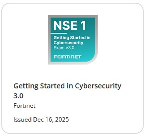
introduction to the threat landscape
i recieved this certification when i completed the introduction to the threat landscape course on fortinet, where i learned about the basics of threat modeling and how to identify and mitigate potential security risks
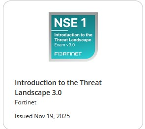
cisco:
introduction to cybersecurity
i recieved this certification when i completed the introduction to cybersecurity course on cisco, where i learned about the basics of cybersecurity and what to expect in the field
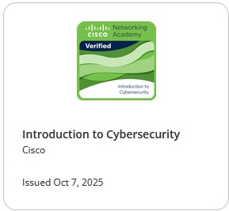
operating systems basics
i recieved this certification when i completed the operating systems basics course on cisco, where i learned about the basics of operating systems and how to use them
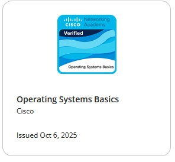
hardware and upgrade support
i recieved this certification when i completed the hardware and upgrade support course on cisco, where i learned about the basics of hardware maintenance, upgrade procedures and how to safely perform these tasks
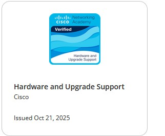
networking badges:
i recieved these certifications when completing the corresponding networking courses on cisco
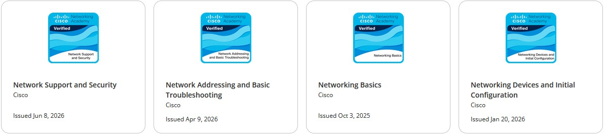
achievements:
worldskills netherlands:
i recieved this certification of participation in the worldskills netherlands cybersecurtiy(teams) competition. Where me and my teamate where battling against 15 other duo's where in the end we first got placed 9th which was unfortunate because the top 8 goes to the finals, the day before the finals we heard that we where allowed to go to the finals as there was a team which couldn't go. unfortunately we couldn't either as my teamate was sick.
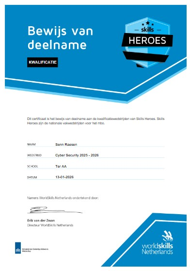